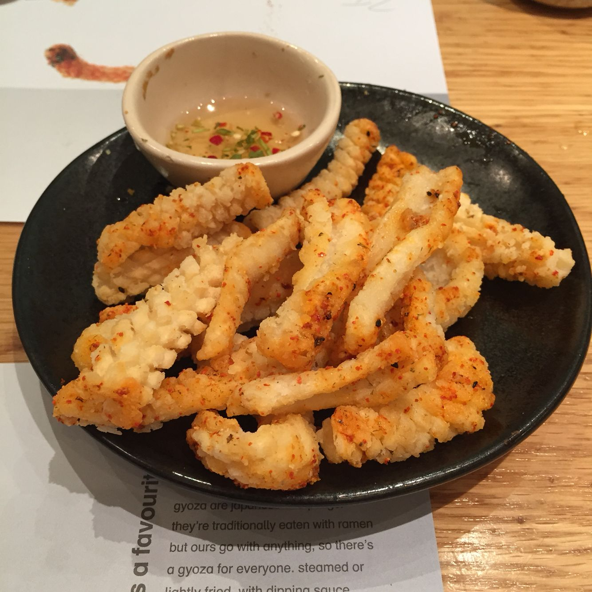

Chilli Squid

Description
Chilli Squid is an infamous dish from Wagamama - Crispy fried squid coated in shichimi, served with a spicy vinegar dipping sauce.
This recipe creates 4 servings of chilli squid, requiring 20 minutes in total.
Ingredients
Spicy Vinegar
- 32g sugar
- 5 tablespoons malt vinegar
- 5 tablespoons light soy sauce
- 1/2 red chilli
- 3 coriander sprigs
Chilli Squid
- 2 squids, body only
- 100g cornstarch
- 2 tablespoons shichimi
- 2 tablespoons spicy vinegar
- 280ml vegetable oil
- salt
Steps
- Pour the sugar and 2 tbsp water in a small saucepan over a medium-low heat and stir until dissolved.
- Remove from the heat and add the soy sauce and vinegar.
- Take your coriander, remove the stalks and chop finely. Then deseed and finely chop your chilli. Add them both to the soy and vinegar mix just before use.
- Prepare the squid. Rinse them under cold water and drain on a plate lined with paper towels. Ensure the squid are thoroughly dry before frying for good, crispy results.
- Transfer the squid to a chopping board and slice them open down the middle so you are left with a rectangular shape. Remove any thin or excess skin to ensure the surface is smooth and soft.
- Using a sharp knife, lightly score the inside of the squid in a small grid or diamond pattern, then slice into 1 inch-wide pieces.
- Place the cornstarch in a shallow bowl and dip the squid pieces in the cornstarch, making sure they are all thoroughly coated.
- Heat the oil in a deep skillet or wok. Once the oil is hot, add the squid pieces, and fry for approximately 2 minutes until pale golden. Do not fry for too long as they will become tough and chewy, work in batches if necessary.
- Using a slotted spoon, transfer to a plate lined with paper towels to drain off any excess oil.
- Add the fried squid into a bowl and sprinkle the shichimi and salt over the top. Give the squid a good toss to coat.
- Serve immediately with the spicy vinegar on the side for dipping. Tuck in! Enjoy!